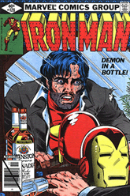
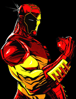
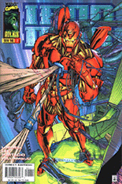

Iron Man, like knights of old, is identified by the armor he wears. The best-dressed of the Marvel heroes, he has changed his look frequently since his debut in 1963, but he can afford to: the man who wears the suits (and designs them) is wealthy inventor Tony Stark. So the man make the clothes, but do the clothes make the man?
Not only does Tony Stark have no super powers of his own, but the armor that gives him strength was also created to keep his damaged heart beating; he could not survive without his iron shell. Eventually his cardiac condition was corrected by a heart transplant, and a later that left him paralyzed was repaired with a microchip. So even without his high-tech costume Tony Stark is a mixture of man and machine, what science fiction writers call a cyborg.
Exactly who Stark might be without his armor is difficult to say. Writer Stan Lee and artist Don Heck initially presented him as a suave playboy, part of a long tradition of rich men who have become masked heroes. Yet unlike most of his predecessors, Stark got his income from a specific source: he manufactured and sold weapons. This was a slightly sinister occupation, despite its undoubted utility, and there were hints that Stark was ambivalent about his role. When his business was menaced by a hostile takeover in a 1979 storyline, he collapsed into alcoholism, and a friend was obliged to take over temporarily the job of Iron Man. So the suit an function without Stark, but can Stark function without the suit?
Stark publicly proclaims that Iron Man is his bodyguard, and to avoid prosecution for his own violence he once announced that the man in the suit had died and been replaced. He might have been talking about himself, since he is empowered by machinery and sustained by another man's heart. Beneath his polished veneer, Iron Man may be the most troubled of Marvel's heroes, forever fighting to prove that his armor is not hollow.
A Hero With a HeartSeeming to pluck his ideas out the air Stan Lee showed something like vision when he chose the country of Vietnam as the setting for the origin of Iron Man (Tale of Suspense #39, March 1963). In 1963 comparatively few American were interested in Vietnam, but bfore long the war being waged there would become the most crucial and controversial event of the 1960s. For Lee, the setting may have been merely expedient, enabling him to introduce the Communist villains he still employed with some regularity. Later, he had second thoughts about his somewhat simplistic treatment of the Asian nation's problems. yet Iron Man was a character whose very premise demanded political intrigue.
The protagonist of the tale, Tony Stark, is a millionaire inventor and arms manufacturer who lead a seemingly charmed life, but who soon develops a problem, as did all of Marvel's best characters. While testing experimental transistor powered weapons in the jungles of Vietnam, Stark ins injured by an exploding booby trap and is captured by the enemy. Fatally injured by a pice f shrapnel that is working its way toward his heart, Stark is ordered to spend his last days inventing new armaments for the Communists; instead he constructs a suit of transistorized armor that also serves as a pacemaker to keep his heart beating. As Iron Man, he conquers his foes and manages to escape, but he is doomed to remain at least partially encased in metal until the day he dies. Life as a Marvel hero was never a bed of roses.
Don Heck had the honor of drawing the initial Iron Man story, a rare opportunity in the days when Jack Kirby Seemed to get first crack at just about everything. And, in fact Kirby did have a hand in Iron Man. "He designed the costume," says Heck, "because he was doing the cover. The covers were always done first. But I created the look of the characters, like Tony Stark and his secretary Peeper Potts." Over all, it was Heck's solid craftsmanship that set Iron Man on the road to success.
Meanwhile, heck was introduced to the intricacies of The Marvel Method of comic book creation. When he was first handed a story synopsis, Heck told editor Lee: "You've got to be kidding. I'm not used to that. I'm used to a full script." Eventually Heck adjusted, and gradually came to enjoy the chance to contribute to the stories, but the remembers that some artists "said the hell with it and left." Some top talents in the field passed in and out of the company quickly because they never adapted to Lee's revolutionary method. "Stan would call me up," says Heck, "and he'd give me the first couple of pages over the phone, and the last page. I'd say, 'What about the stuff in between?' and he'd say, 'Fill it in.'"
Heck's solid background in war comics helped him get Iron Man off to a good start, but he wasn't entirely pleased with the character's armor despite his boundless admeration for Jack Kirby. " He was terrific," syas Heck. "He was always willing to help somebody or tell you how to do something. And as for the super heroes, the main reason they existed was Jack Kirby. He used to call them 'the guys in long underwear.'"
Kirby's original Iron Man suit, realistically bulky given the circumstances under which Tony Stark had to build it, soon changed from forbidding gray to gold. Later, it was streamlined into a red-and-gold design by Steve Ditko. Perhaps because the suit is a machine, many artists have been tempted to tinker with it, and over the years, Iron Man's costumed appearance has changed more often than any other super hero.
Iron Man, a wealthy patriot with a war injury, might have reminded some readers of John F. Kennedy, whose inauguration in1961 had infused the United States with a feeling of adventurous optimism. Stan Lee has never compared J.F.K. to Iron Man, but he has speculated that the Kennedy era's spirit provided the ideal atmosphere for the introduction of new super heroes. Kennedy's assassination in 1963 ended the era all too quickly, and signaled the advent of the turmoil that would characterize the rest of the decade. Kennedy had encouraged the buildup of American troops in Vietnam, and as the war there became more deadly and more divisive, Iron Man began to look even more like a symbol of The United States: he went halfway around the world to fight for what he thought was right, and he came home with a wound that seemed as if it would never heal.